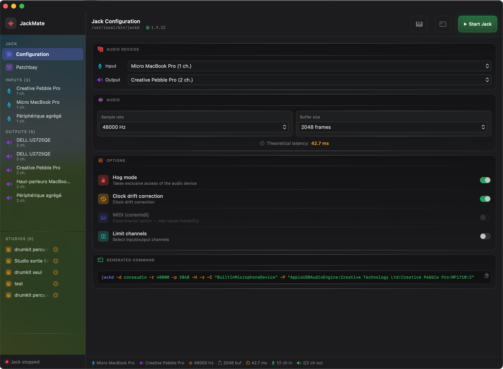
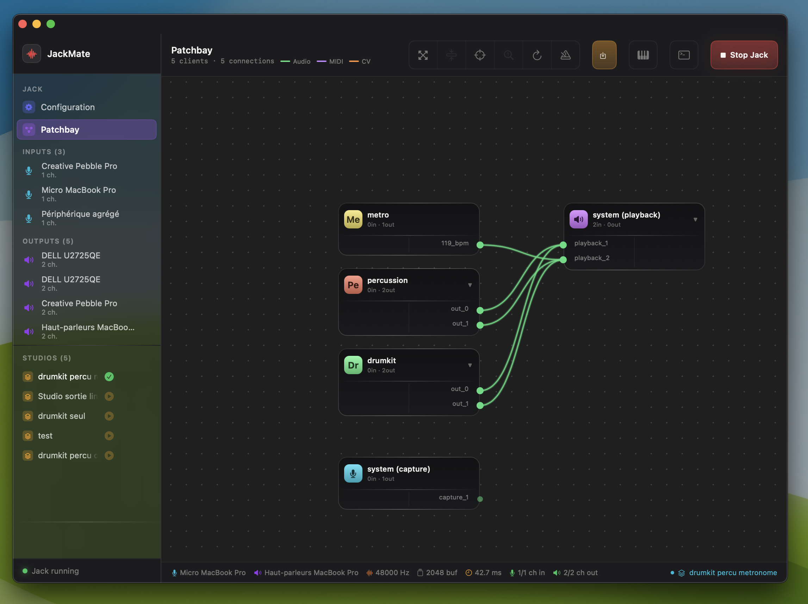
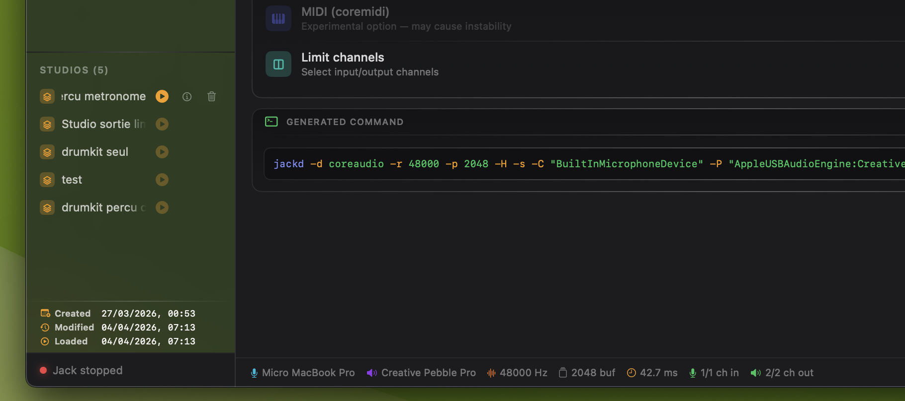
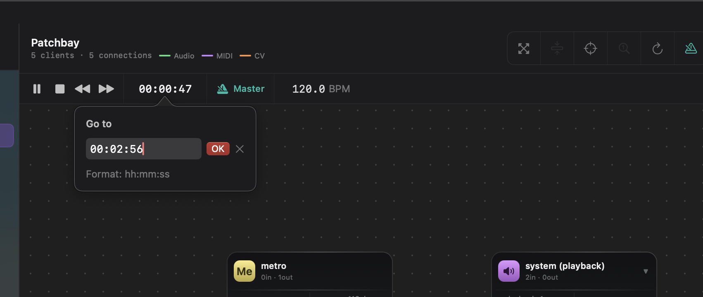
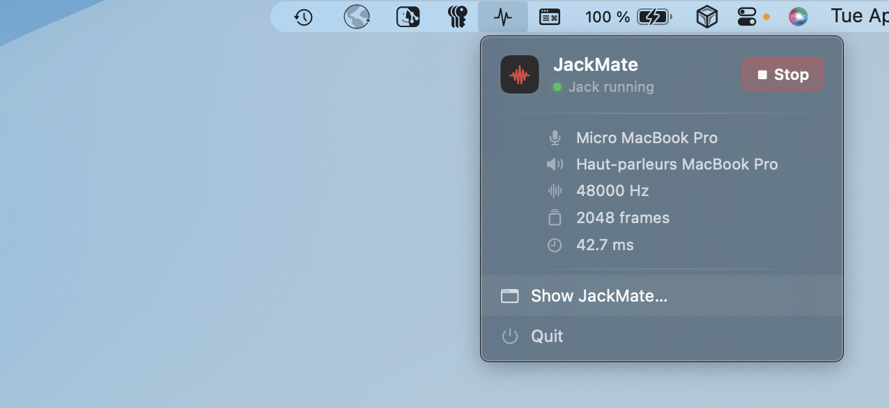

JackMate
JackMate
Start, configure, and patch your Jack Audio Server in a few clicks. A native macOS interface built for musicians and audio engineers.
What JackMate does

Get started
Configure Jack
in seconds
Select audio interfaces, sample rate and buffer size. JackMate computes compatible sample rates in real time and generates the exact jackd command — no terminal required. Hog mode, channel selection, aggregate device support, and a live latency readout.

Connect
Patch visually,
like a pro
See every active Jack client and draw connections with the mouse — just like a hardware patch bay. Multi-select, group drag, Sugiyama auto-layout, and Connect All for bulk wiring in one click. Haptic feedback on ports and canvas edges.
Explore Patchbay
Save & restore
Your sessions,
always ready
Save the complete state of your patchbay — connections, node positions, Jack config, and CLI client commands — as a named Studio. Load in one click. JackMate restarts Jack only when the configuration has changed, and relaunches every CLI client automatically.
Explore Studios
Play & sync
Jack Transport,
front and centre
Play, pause, stop, and seek from the patchbay toolbar. Display position as BBT, timecode or frames — click to cycle. Set BPM and claim the Jack timebase master role to drive every connected DAW in perfect sync.
Explore Transport
Always there
Jack in your
menu bar
JackMate lives in your menu bar. Start and stop Jack, load a studio, check the xrun count and current latency — even with the main window closed. A single icon, always within reach.
Explore Menu BarPhilosophy
JackMate doesn’t replace Jack — it tames it.
Jack is powerful but austere. Configuring jackd by hand, re-entering connections after every restart, monitoring xruns in a terminal… all of that disappears with JackMate.
The interface is intentionally dark, dense and precise — in the spirit of professional audio tools and modern development environments.
{kind=link}
Requirements
| Minimum | |
|---|---|
| macOS | 15.0 Sequoia |
| Jack Audio Connection Kit | 1.9.x (jackd) |
| Architecture | Apple Silicon or Intel |
| Languages | English · French · German · Italian · Spanish |
Jack must be installed separately. JackMate automatically searches for jackdmp or jackd in /usr/local/bin and common locations. If Jack is not found at launch, JackMate shows installation instructions (Homebrew or .pkg).